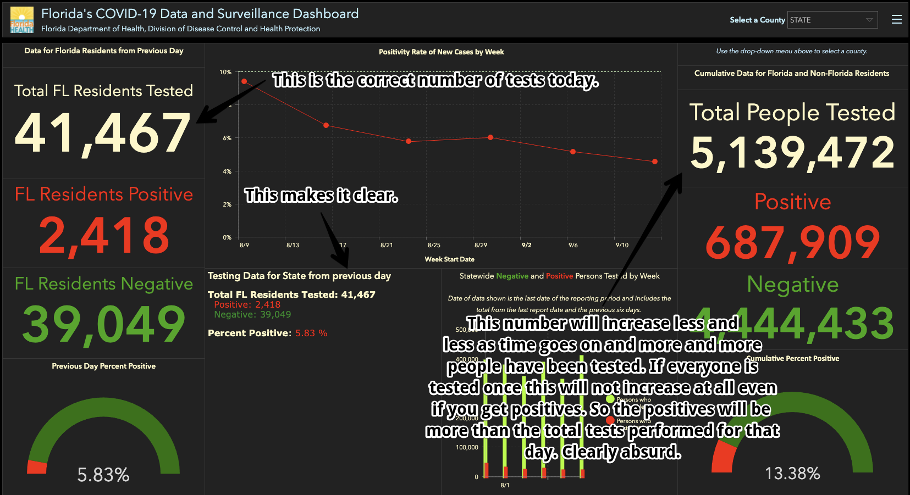

FL positivity rate is skewed upwards by more than 100% error
Issue number 858
stevenjwolfman opened this issue on September 22, 2020 at 1:43 pm
Labels Data quality stale
State or US: FL
Describe the problem The number of FL tests performed is based on the cumulative people tested yesterday compared to the cumulative people tested today. This is clearly a mistake because since more and more people have been tested and are therefore from ineligible to be counted as a negative test again, it creates a downward bias in the number of tests even if the same number of people are being tested. Reductio ad absurdum, once everyone has been tested once, the number of new positives would be greater than the number of new people who were tested because no new people were tester. This is a very big mistake.
Link to data source  https://fdoh.maps.arcgis.com/apps/opsdashboard/index.html#/8d0de33f260d444c852a615dc7837c86
Comments
This issue has been closed because it was stale for 15 days, and there was no further activity on it for 10 days. You can feel free to re-open it if the issue is important, and label it as “not stale.”
This issue has been automatically marked as stale because it has not had recent activity. It will be closed if no further activity occurs. Thank you for your contributions!